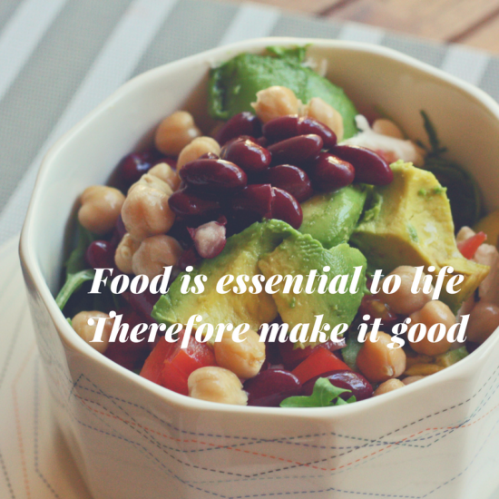

How can you know?
In truth, some of us cannot know what we are allergic to. Not to worry, ask your parents or guardians; that might help.
What does this entail?
Are there any psychological implications of eating food?
Food is meant to be enjoyed by all, both meat lovers and vegetarians alike; so, do not be shy, find that taste that rocks your world.
There is something I'd like to call feeding awareness; you get to a certain age and know what you can and can't eat. Be wary of Allergens.
In truth, some of us cannot know what we are allergic to. Not to worry, ask your parents or guardians; that might help.
It might be wise to have an epinephrine handy; an important first aid medication for anaphylaxis shock. Just saying.
Not to burst the bubble of persons with a sensitive digestive makeup, but please avoid lactose if you're lactose intolerant or intolerant to any other dishes.
Foodie lives,
really do matter!Adventurous eaters are explorers; they enjoy what life offers.
Be not afraid to be a Foodie.
some are, and some are not.
Fret not! you can learn it, if you want to.
but remember, you become what goes into your mouth.
-Chikaodili B.M. Nwosu
The food should look good with some attractive colours and taste great.
This is my formular to de-stressed living.
Make the world a healthier place.
Visit My Website for more information.